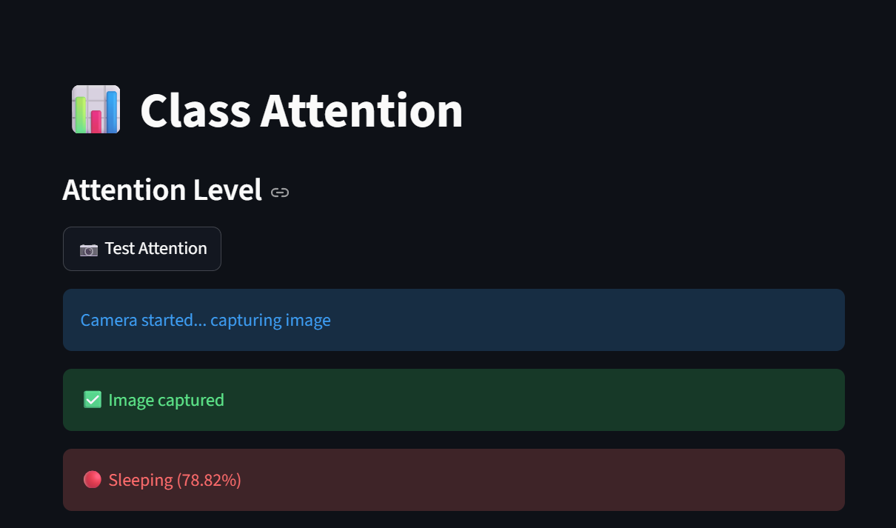
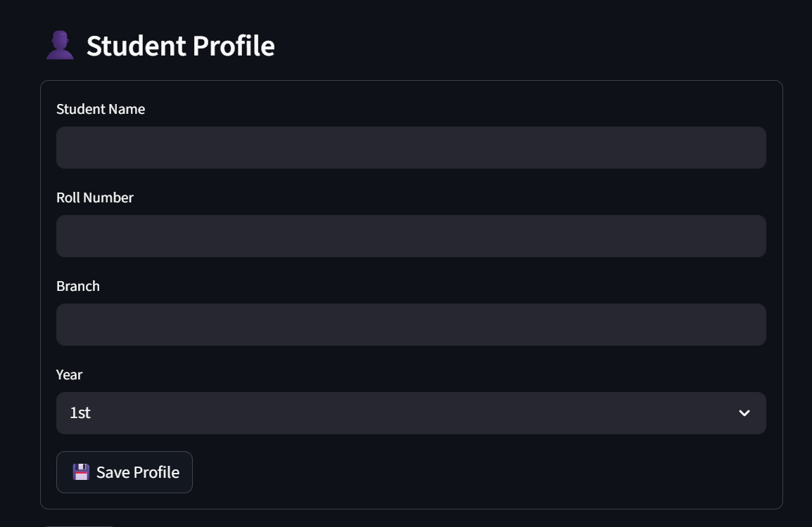
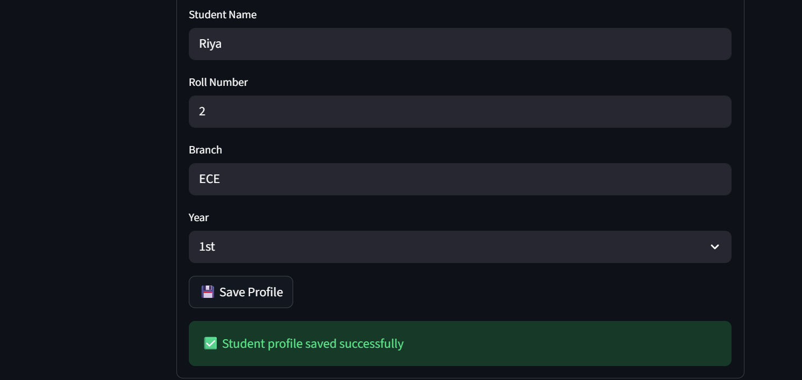
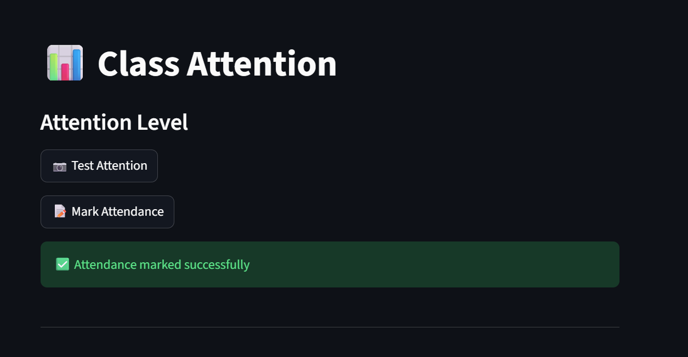

Hi, I'm Astha Kumari, a Computer Science graduate with a B.Tech in Computer Science and Engineering. I am currently pursuing an Advanced Certificate Course in HPC-AI at C-DAC Mohali. I have hands-on experience in Computer Networking, Linux, Python, AI/ML, Cybersecurity, Cloud Computing, and High Performance Computing. My networking experience includes LAN/WAN, VLANs, subnetting, VPN routing, OSPF, EIGRP, and RIP. I have worked on projects including DeepGuard AI – Deepfake Detection System, Real-Time Sign Language Translator, and Class Vision-AI. I enjoy solving real-world problems through technology and continuously developing my skills in networking, artificial intelligence, cloud computing, and software development.
Hands-on networking practicals completed as part of the HPC-AI Course at C-DAC Mohali.
Practiced dynamic routing configuration using RIP, OSPF and EIGRP across multiple routers. Configured VLANs for LAN segmentation and worked on subnetting and IP address planning.
Implemented VPN routing and diagnosed connectivity issues to resolve network problems.
Concepts: LAN/WAN, Routing, Switching, VLAN, Subnetting, VPN, OSPF, EIGRP, RIP
AI-powered classroom monitoring system deployed on Microsoft Azure. The application uses computer vision and deep learning for real-time face recognition, automated attendance tracking, and student engagement analysis. Built with Streamlit and integrated with cloud deployment for live access.
GitHub ↗AI-powered Deepfake Detection System built using PyTorch, OpenCV, ResNet18, and Bidirectional LSTM. The application analyzes uploaded videos through frame extraction, face detection, face alignment, feature extraction, and temporal sequence learning to identify manipulated content. Features include user authentication, confidence scoring, explainable AI, video metadata analysis, and REAL/FAKE prediction. Built with Streamlit and deployed on the cloud for real-time access.
GitHub ↗AI-powered real-time Sign Language Translator using Computer Vision and Machine Learning. Supports A–Z alphabet detection, 33+ gestures, text-to-speech, multi-language translation, emergency communication, and live webcam-based sign recognition.
GitHub ↗Interactive dashboard to analyze student performance.
View Dashboard →An AI-powered classroom monitoring system that analyzes live camera input to detect student attention levels using Azure Custom Vision. The system classifies behaviors such as Focused, Looking Away, and Sleeping, and automatically marks attendance. This system is designed to support smart classrooms and self-study environments by continuously monitoring student engagement using AI.
Tech Stack: Python, Azure Custom Vision, Computer Vision, CSV Data Handling




Jul 2026 – Present | C-DAC Mohali
Feb 2026 – Jul 2026 | C-DAC Mohali
Jan 2026 | Microsoft | Remote
AICTE – Microsoft Elevate Program (Jan 2026)
View Certificate